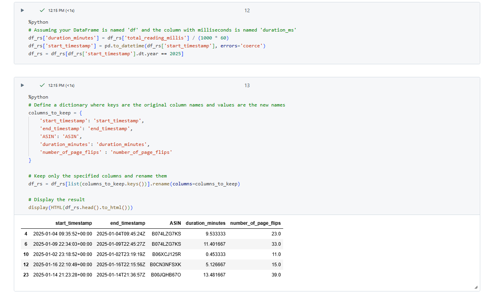
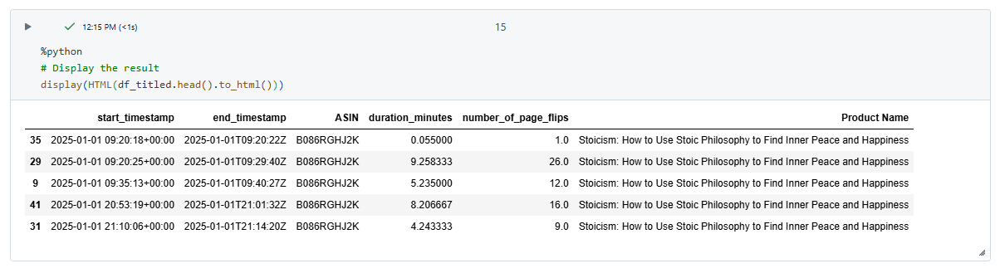
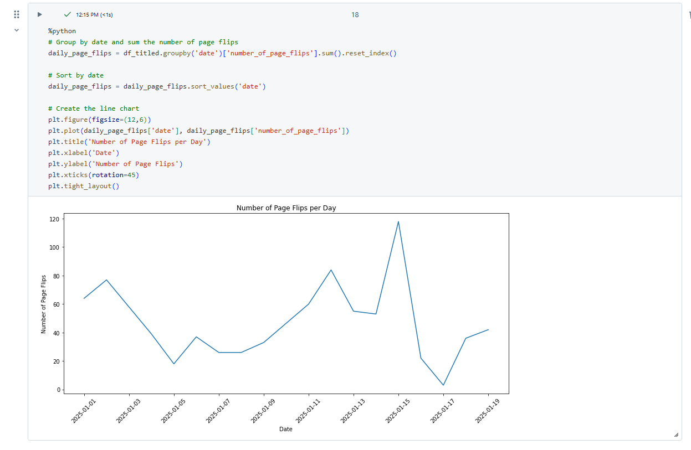
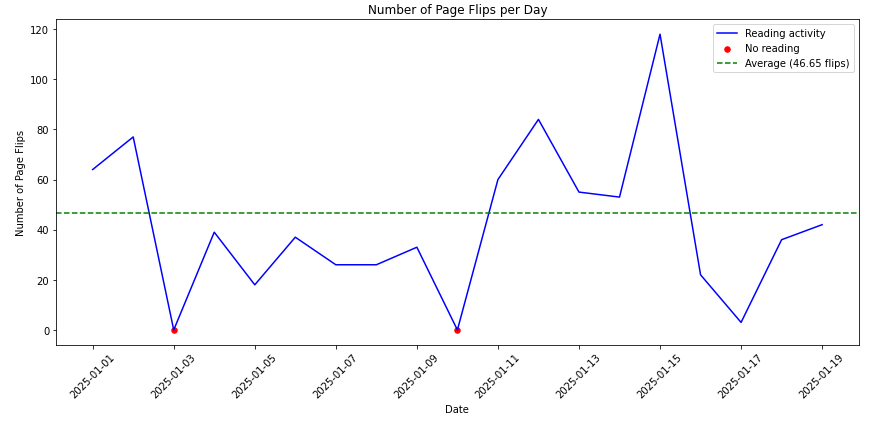

Building Habits With My Kindle
Hi all, I hope you have settled into the new year. The turn of the year often comes with a reflective period. I tweeted at the start of the year a few of my goals which included;- 30 mins x 330 days exercise
- 20 mins x 330 days kindle
- Run another ultra marathon
- 1 fitness holiday
- Grow site and sports youtube content
- More time with gf & dog
- Alcohol free
You will end up with a zip file to download. Unzip that folder. There will be about 74 folders within that. Let's take a look at just two for now, book relations and reading session.
First lets read in a few files.
The ones I think are of value are

As part of the code i'll do a little clean up too, adding flexibility for renaming columns as well as limiting it just to this years books. We then join those two files together to get a start and end time, the number of pages flipped and the title of the book.
You'll see recently the book I read on stoicism.

With that light prep we can obviously now start to look at what it means for my goal. There are a few questions i have in mind.
- Content Updates (Mainly because it had the title of the books in, there are other files that also do, but this had the whole list for me) I don't end up using the book name, but it may be useful for your own analysis.
- ReadingSession - This is the really valuable file as it has the start and end times to all the kindle reads. Start & End times as well as page flips are captured here.
- Am I reading every day?
- Am i even reading 20 minutes a night? I don't think I am. I feel like i am rushing my read.
- I read alot of non fiction.... I tend to just skim read the books, skipping chapters or pages where I already know the concept. How does this impact the page turns a day.

Quickly we see the number of pages flips a day is reasonable.... but it doesnt highlight the days I missed nor gives me a sense of how many pages a day this way. Also what happened on the 16th? Did i just want to mark a book complete?
We can add a little more context through filling in the date gaps making it continuous and bringing light to the days i didn't read. Interestingly enough the 3rd of Jan is my birthday... so i'll let myself off. On the 10th Jan I started reading at 3 minutes past midnight. Shame!
The chart shows i flip over 40 pages a day. But in truth this will be lower in terms of actual read for two reasons.
LOGGING OFF,
CJ
- The scan reading technique
- Flicking back and forth to re read pages.
- I'm doing okay at loading the kindle, I just need to really relax into reading it. It might be worth removing other distractions when I go to read so that I can solely focus on reading.
- Skim reading is okay, but perhaps I need to go beyond what i normally read around self-help, business, fitness and health to spend more time digesting the information on each page.